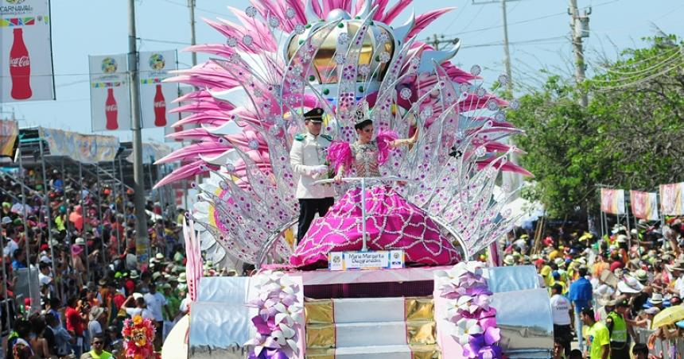
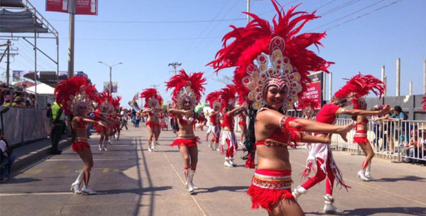
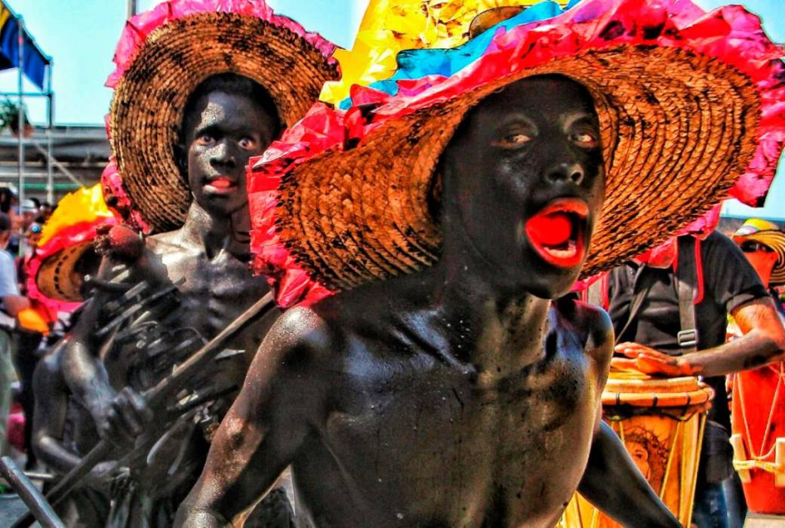
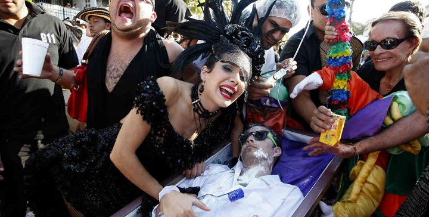

El carnaval se celebra cuatro días antes de iniciar la Cuaresma, la gente se entrega a la fiesta y el jolgorio y disfraza en un acto de diversión y de desinhibición.31 Durante esta época, el barranquillero y un buen número de forasteros ( extranjero) que llegan a la ciudad se abandonan al goce colectivo, al trago y el baile. Hay que tener en cuenta que en algunos casos estos eventos se realizan en simultáneo.
El festejo empieza en firme el sábado de carnaval con la Batalla de Flores, primera de las cuatro jornadas de celebración, su acto central, el más importante y el más esperado. Es un gran desfile de carrozas, que encabeza la Reina del Carnaval, seguida de grupos folclóricos, disfraces, cumbiambas y comparsas, ganadoras de los concursos del carnaval anterior. La Batalla de Flores es el desfile más antiguo que se realiza en el carnaval de Barranquilla y fue organizado por primera vez en 1903 por iniciativa del general Heriberto Arturo Vengoechea quien buscaba celebrar el fin de la Guerra de los Mil Días. Con este evento regresó el carnaval a la ciudad de Barranquillla puesto que desde 1900 la celebración había sido suspendida. Inicialmente, la Batalla de Flores era un paseo por el antiguo camellón Abello, hoy paseo Bolívar, que abrían dos bandos conformados por familias prestantes de la ciudad, a bordo de victorias o carruajes decorados con flores.32 El historiador y cronista Alfredo de la Espriella describe a la primera Batalla de Flores como un juego en el que dos grupos de personas se enfrentaban disparándose "serpentinas, confetis, flores naturales y perfumes" durante un recorrido que duraba cuatro vueltas a la manzana. Esta batalla terminaba con un gesto de paz en el que ambos grupos se reconciliaban y se iban a celebrar al teatro Emiliano Vengoeachea. Su éxito fue tal que el año siguiente se repitió la Batalla.19 Desde 1991 se realiza en la Vía 40, luego de haberse realizado por años en la avenida Olaya Herrera, la carrera 43 y el paseo de Bolívar. Hoy en día las carrozas van acompañadas por agrupaciones musicales del momentos con equipos de altavoces de alta potencia que invitan al público a celebrar al ritmo de cada una de las danzas. Los espectadores pasaron de estar de pie, a sentarse en silla y últimamente se ha popularizado el uso de palcos. Simultáneamente se realizan desfiles por la carrera 44, la Batalla de Flores del Recuerdo "Sonia Osorio", que hace parte del carnaval de la 44, evento gratuito y sin palcos, y el Desfile del Rey Momo en la calle 17.
El segundo día de carnaval se lleva a cabo la Gran Parada de Tradición y Folclor, o simplemente Gran Parada, desfile instituido en 1967. En él solo se presentan grupos folclóricos tradicionales, cumbiambas y comparsas. La Gran Parada también se lleva a cabo en la Vía 40, pero no desfilan carrozas. Este desfile muestra a la danza y la música en su esencia más tradicional puesto que ya no hay carrozas ni grandes equipos de sonido que las distraigan. Para el año 2013 se contabilizaron alrededor de 300 comparsas. Las danzas que hacen su aparición en este desfile son las catalogadas danzas "populares" como la del Caimán Cienaguero o de las Negritas Puloy y "tradicionales" como la de los Diablos Arlequines o de Son de Negro. La música por tanto también muestra su faceta más conservadora siendo las cumbias, chandés -asociada con la danza del Garabato- y fandangos -asociada con la danza de las Marimondas- las más escuchadas.
Desde el año 2003, se celebra una versión más estilizada e internacionalizada de la Gran Parada del domingo de Carnaval, celebrada de igual forma en la Vía 40. A diferencia de su homónima, pueden observarse carrozas desfilar, así como la mezcla de los elementos folclóricos tradicionales con nuevas tendencias que buscan reinventarlos. Por el número de participantes, y por su despliegue de música, colorido y derroche estético en disfraces, diseños, adornos con brillantes, plumas y accesorios, los grupos de fantasía, poco a poco, se fueron convirtiendo en un fenómenos popular de participación en el carnaval, sobre todo entre las nuevas generaciones, lo que, a la postre, llevó a la creación de este espacio en que participan comparsas cuyo número de integrantes puede llegar a trescientos. De esta manera se dan a conocer mixturas coreográficas que innovan fluctuando entre lo más tradicional, lo local y lo internacional, se involucran ritmos de diferentes nacionalidades, como el samba, la salsa, el reguetón, la champeta y la música electrónica con otros más locales como la cumbia, el porro, el mapalé, el son de negro y el merecumbé. Este evento atrae propuestas renovadoras al carnaval de Barranquilla que buscan tener un espacio y generar permanencia en las carnestolendas. El éxito de una comparsa o danza de fantasía podría significar la revitalización del carnaval mismo, enriqueciéndolo y colaborando en su desarrollo. Poco a poco se ha convertido en uno de los desfiles más concurridos del carnaval. En el Carnaval de Barranquilla 2017 se cambia el nombre del desfile de Gran Parada de Fantasía y se adopta el de Gran Parada de Comparsas debido a la inclusión con el pasar de los años de diversas comparsas y coreografías adicionales a las de fantasía.33 Festival de Orquestas Artículo principal: Anexo:Ganadores del premio Congo de Oro Festival de Orquestas 2012, presentación Fello Zabaleta. Se celebra el Festival de Orquestas (creado en 1969),21 desde las primeras horas de la tarde hasta la madrugada del martes. En el Festival participan en las distintas categorías musicales las orquestas y agrupaciones que se presentan en los numerosos bailes del carnaval. Los ganadores en cada categoría reciben el codiciado Congo de Oro. Una de las reglas más llamativas del concurso es que se deben interpretar tres canciones y al menos una de éstas debe estar dedicada, en su contenido, a la ciudad de Barranquilla, teniendo en cuenta el repertorio rítmico del Caribe colombiano. Este evento se celebra actualmente en el estadio Romelio Martínez. Las siguientes son las modalidades en las que compiten las agrupaciones para conseguir el galardón del Congo de Oro: Tropical. Término genérico que hace referencia a las agrupaciones tanto de formato orquestal popular como de proyección folclórica (de pitos, flautas y tambores) que interpretan géneros musicales típicos de la región Caribe y del carnaval barranquillero como lo son la cumbia, el porro, el fandango, la chalupa, el mapalé, entre otros. Vallenato. Identifica al vallenato en todos su aires tradicionales o variaciones (paseo, son, merengue, puya y nueva ola), interpretados con acordeón, caja y guacharaca como instrumentación base. Salsa. Hace referencia a los diversos ritmos de origen afroantillano como lo son el son cubano, son montuno, pachanga, guaguancó, boogaloo, bomba, plena boricua, mambo, cha-cha-chá, latinjazz y fusiones afroantillanas. Merengue. Término que aglutina a los aires musicales oriundos de República Dominicana y de Centroamérica y las Antillas como lo son el merengue típico, el tecnomerengue, el house, el ragga, entre otros. Música urbana. Participan aquellas agrupaciones de géneros que respondan a las nuevas sonoridades o tendencias musicales urbanas, como la champeta, el reguetón, el hip hop, el rap, el dancehall, fusiones, etc. Rescate a lo Nuestro. Término genérico que hace referencia a las agrupaciones de formato folclórico que interpretan géneros musicales típicos de la región Caribe y del carnaval barranquillero como lo son la cumbia, el porro, el fandango, la chalupa, el mapalé, entre otros. Del mismo modo, se otorgan distinciones a los mejores instrumentistas y a los mejores cantantes del certamen.
A manera de cierre se lleva a cabo el entierro de Joselito Carnaval, el cual simboliza el fin de las festividades. En este día en muchos barrios de la ciudad se realizan jocosos "entierros" de Joselito, quien simboliza la alegría de las carnestolendas. Se dice entonces que el personaje "resucita" el sábado de carnaval y "muere" el último día cansado y "enguayabado" (con resaca) para "resucitar" nuevamente el año siguiente en el próximo carnaval. De esta manera cientos de barranquilleros salen de sus casas en cortejos fúnebres para llorar al difunto con gran histrionismo. Joselito Carnaval puede ser una persona real o un muñeco y suele ser transportado dentro de un ataúd o camilla adornado con flores y cintas y rodeado de sus "viudas" que lo lloran. Las viudas pueden ser hombres disfrazados de mujeres. Además de las viudas se pueden apreciar personajes como sacerdotes y los hijos huérfanos. El personaje y su entierro son una adaptación local del entierro de la sardina, acto que simboliza el fin de distintos carnavales en Iberoamérica. Desde 1999, la Fundación Carnaval de Barranquilla celebra el concurso "Joselito se va con las cenizas" para incentivar la participación en la celebración y en el que se premia la mejor propuesta escénica. En la noche se celebra en el barrio Abajo o en la plaza de la Paz un encuentro de letanías, con las que se ventilan, critican y comentan los temas de la actualidad local, nacional e internacional. Al día siguiente, Miércoles de Ceniza, empieza la Cuaresma, periodo de recogimiento religioso y de abstención que precede a la Semana Santa.
